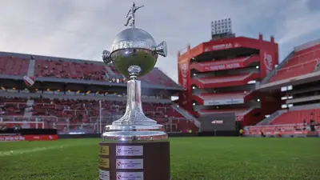
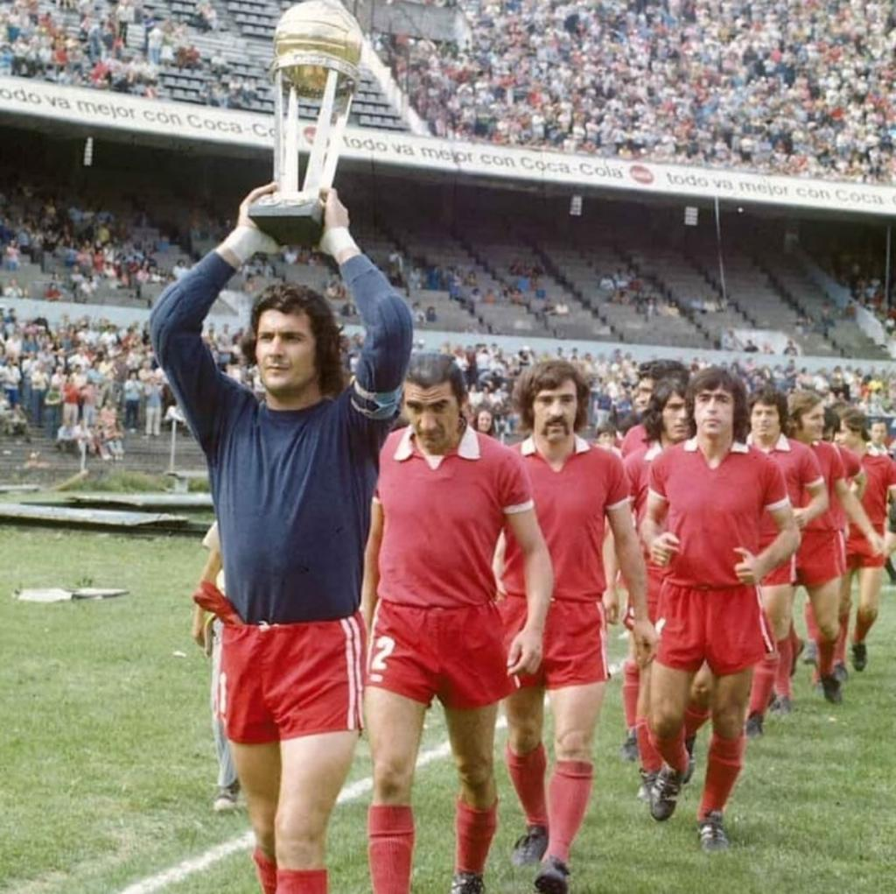
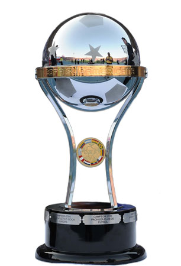
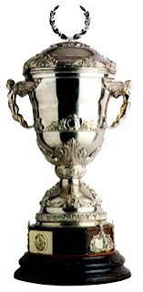
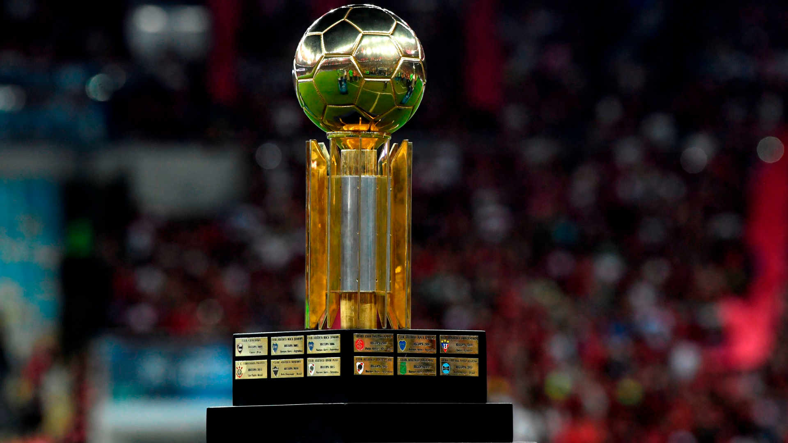
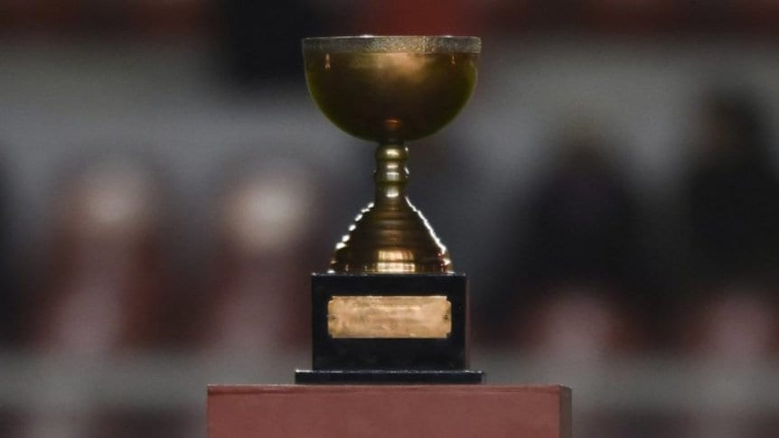
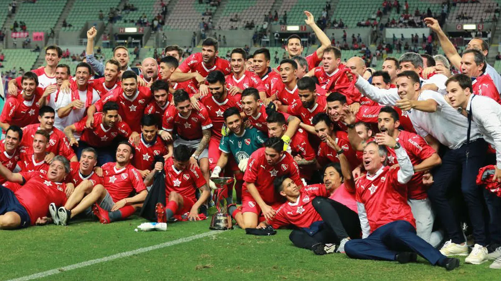
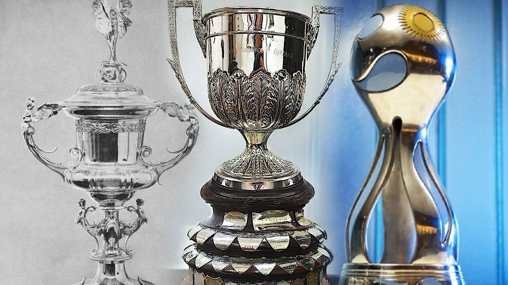

Palmarés del Club Atlético Independiente
🏆 Copa Libertadores (7)

Independiente es el máximo ganador histórico de la Copa Libertadores, obteniendo el torneo en siete oportunidades.
- 1964
- 1965
- 1972
- 1973
- 1974
- 1975
- 1984
🌎 Copa Intercontinental (2)

Campeón del mundo en dos oportunidades.
- 1973
- 1984
🏆 Copa Sudamericana (2)

- 2010
- 2017
🏆 Supercopa Sudamericana (2)

- 1994
- 1995
🏆 Recopa Sudamericana (1)

- 1995
🏆 Copa Interamericana (3)

- 1973
- 1974
- 1976
🏆 Suruga Bank (1)

- 2018
🏆 Copa Aldao (2)

- 1938
- 1939
🇦🇷 Campeonatos de Primera División (16)
Era Amateur
- 1922
- 1926
Era Profesional
- 1938
- 1939
- 1948
- 1960
- 1963
- 1967
- 1970
- 1971
- 1977
- 1978
- 1983
- 1989
- 1994
- 2002
🇦🇷 Copas Nacionales (9)

Independiente conquistó 9 copas nacionales oficiales a lo largo de su historia.
🏆 Copa Carlos Ibarguren (2)
- 1938
- 1939
🏆 Copa Adrián C. Escobar (1)
- 1939
🏆 Copa de Competencia "La Nación" (1)
- 1914
🏆 Copa de Competencia Jockey Club (1)
- 1917
🏆 Copa de Honor (1)
- 1918
🏆 Copa de Competencia (AAm) (3)
- 1924
- 1925
- 1926